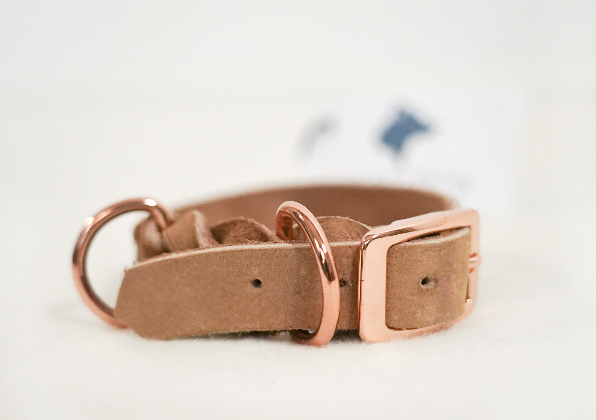

♥
Mit Liebe gemacht, für Hunde mit Charakter
♥

Handwerk und Liebe zum Hund
Hier findet ihr Dinge, die lange begleiten dürfen. Jedes Produkt formt sich in sorgfältiger Handarbeit, mit Blick auf Alltagstauglichkeit und Stil. Getestet im echten Leben – dort, wo Hundezubehör entstehen soll.

CaraDog - von Katharina und Armani
CaraDog steht für liebevoll designte Hundemode und hochwertiges Zubehör. Nachhaltige Materialien, kurze Wege und echte Handarbeit sorgen für Lieblingsstücke, die lange begleiten.
Über unsIndividuelle Anfertigung
Dein Hund ist einzigartig. Wir passen Maße, Farben und Details nach Wunsch an, damit alles perfekt sitzt.